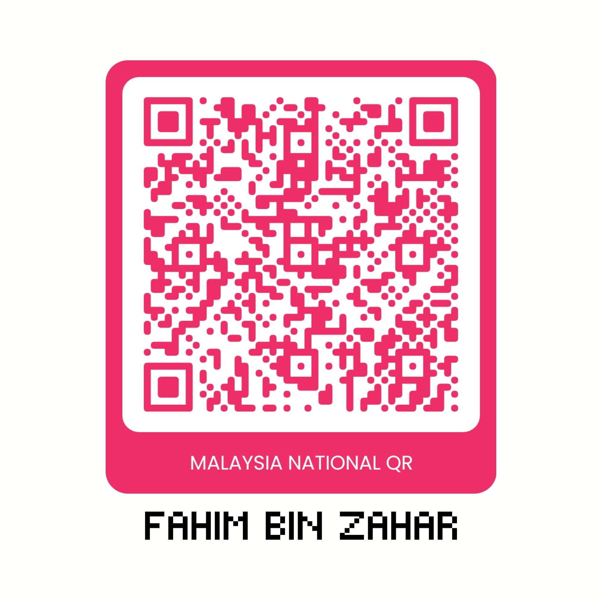

01
Tampal pautan
Masukkan alamat media yang disokong.
Pemuat turun video macOS percuma
Musim ialah aplikasi macOS percuma untuk menyimpan video dan audio yang disokong terus ke Mac anda—tanpa akaun, dengan sumbangan pilihan sahaja.
Masukkan alamat media yang disokong.
Pilih mutu, format atau pilihan audio yang tersedia.
Muat turun terus ke folder pilihan pada Mac anda.
Simpan video yang disokong untuk tontonan, rujukan atau arkib kandungan yang dibenarkan. Ambil audio yang tersedia tanpa penukar berasingan atau memuat naik fail ke perkhidmatan lain.
Pilih mutu serta format sebelum muat turun bermula. Pantau beberapa muat turun dan cuba semula jika berlaku gangguan.
Cari fail siap dengan pantas, susun media ke dalam folder dan buka terus dalam Finder.
Potong, krop, laraskan kelajuan, nisbah atau peleraian video sedia ada sebelum mengeksportnya.
Musim tidak mengendalikan pustaka media dalam talian. Data aplikasi dan fail muat turun disimpan pada Mac anda.
Menderma tidak membuka ciri tambahan. Ia sekadar membantu Musim terus diselenggara.
| Seluruh aplikasi | RM0 |
|---|---|
| Muat turun | Tanpa had oleh Musim |
| Akaun | Tidak diperlukan |
| Langganan | Tiada |
| Kemas kini | Percuma |
| Sumbangan | Pilihan |
Musim diinspirasikan oleh VidBee dan dikuasakan oleh yt-dlp serta FFmpeg. Projek sumber terbuka ini menyediakan asas; Musim membina semula pengalaman dalam SwiftUI untuk aliran kerja macOS tersendiri.
Musim tidak mendakwa mencipta VidBee, yt-dlp atau FFmpeg. Hak cipta dan lesen setiap projek kekal milik pemegangnya.
Berteraskan VidBee, yt-dlp dan FFmpeg dengan penghargaan yang jelas.
Tiada pustaka media Musim yang dihoskan dalam talian.
RM0 benar-benar merangkumi seluruh aplikasi.
Ya. Seluruh aplikasi, muat turun dan kemas kini adalah percuma. Sumbangan tidak membuka apa-apa ciri.
Pemasang yang dipautkan ialah binaan Musim semasa. Semak nilai SHA-256 yang dipaparkan sebelum memasang. Musim belum ditentusahkan oleh Apple, jadi macOS mungkin menunjukkan amaran.
Musim diedarkan di luar Mac App Store dan binaan semasa belum ditentusahkan oleh Apple. Buka Tetapan Sistem, pilih Privasi & Keselamatan, kemudian benarkan Musim hanya jika nilai semakannya sepadan.
Binaan ini menyokong Mac Apple Silicon yang menjalankan macOS 14 atau lebih baharu. Mac berasaskan Intel belum disokong.
Tidak. Sokongan bergantung pada yt-dlp dan perubahan platform. Sesebuah laman mungkin berhenti berfungsi buat sementara waktu sehingga enjin dikemas kini.
Dalam folder yang anda pilih. Sejarah dan susun atur pustaka disimpan dalam folder Sokongan Aplikasi Musim pada Mac anda.
Tidak. Binaan semasa tiada analitik, telemetri atau laporan ranap. Musim hanya membuat sambungan rangkaian yang diterangkan dalam bahagian privasi.
Hanya muat turun kandungan milik anda, yang dibenarkan pemiliknya, berlesen sesuai atau yang anda diberi kuasa secara sah untuk simpan.
Pembangunan, ujian, tandatangan aplikasi dan pengehosan. Aplikasi tetap lengkap jika anda tidak menderma.
Gunakan pautan laporan masalah apabila repositori Musim diterbitkan. Sementara itu, simpan alamat sumber, mesej ralat dan versi Musim untuk disertakan dalam laporan.
Jika Musim menjimatkan masa anda, sumbangan boleh membantu kos pembangunan, ujian, tandatangan dan pengehosan. Apa-apa jumlah membantu, tetapi tiada apa yang berubah jika anda tidak menderma—seluruh aplikasi kekal percuma.

Nama penerima: Fahim Zahar
Sumbangan adalah pilihan dan tidak membuka ciri. Sahkan nama penerima dalam aplikasi bank anda sebelum mengesahkan.
Muat turun aplikasi Musim lengkap untuk macOS tanpa akaun, langganan atau peningkatan berbayar.
Percuma selamanya · Sumbangan pilihan · Sumber dan lesen tersedia